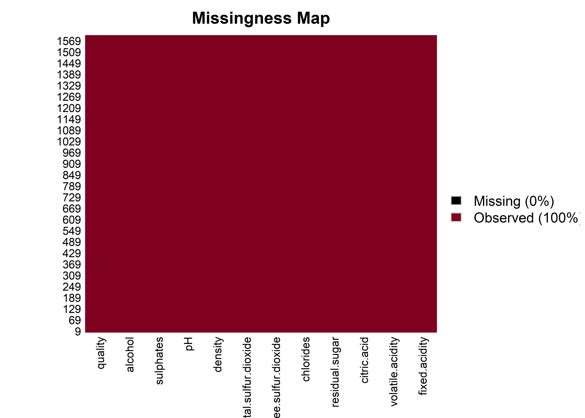

Capítulo 3 Carga y estructura de los datos
datos <- read_delim("winequality-red.csv",
delim = ";", escape_double = FALSE, trim_ws = TRUE)
dim(datos)## [1] 1599 12## spc_tbl_ [1,599 × 12] (S3: spec_tbl_df/tbl_df/tbl/data.frame)
## $ fixed acidity : num [1:1599] 7.4 7.8 7.8 11.2 7.4 7.4 7.9 7.3 7.8 7.5 ...
## $ volatile acidity : num [1:1599] 0.7 0.88 0.76 0.28 0.7 0.66 0.6 0.65 0.58 0.5 ...
## $ citric acid : num [1:1599] 0 0 0.04 0.56 0 0 0.06 0 0.02 0.36 ...
## $ residual sugar : num [1:1599] 1.9 2.6 2.3 1.9 1.9 1.8 1.6 1.2 2 6.1 ...
## $ chlorides : num [1:1599] 0.076 0.098 0.092 0.075 0.076 0.075 0.069 0.065 0.073 0.071 ...
## $ free sulfur dioxide : num [1:1599] 11 25 15 17 11 13 15 15 9 17 ...
## $ total sulfur dioxide: num [1:1599] 34 67 54 60 34 40 59 21 18 102 ...
## $ density : num [1:1599] 0.998 0.997 0.997 0.998 0.998 ...
## $ pH : num [1:1599] 3.51 3.2 3.26 3.16 3.51 3.51 3.3 3.39 3.36 3.35 ...
## $ sulphates : num [1:1599] 0.56 0.68 0.65 0.58 0.56 0.56 0.46 0.47 0.57 0.8 ...
## $ alcohol : num [1:1599] 9.4 9.8 9.8 9.8 9.4 9.4 9.4 10 9.5 10.5 ...
## $ quality : num [1:1599] 5 5 5 6 5 5 5 7 7 5 ...
## - attr(*, "spec")=
## .. cols(
## .. `fixed acidity` = col_double(),
## .. `volatile acidity` = col_double(),
## .. `citric acid` = col_double(),
## .. `residual sugar` = col_double(),
## .. chlorides = col_double(),
## .. `free sulfur dioxide` = col_double(),
## .. `total sulfur dioxide` = col_double(),
## .. density = col_double(),
## .. pH = col_double(),
## .. sulphates = col_double(),
## .. alcohol = col_double(),
## .. quality = col_double()
## .. )
## - attr(*, "problems")=<externalptr>El dataset contiene 1599 observaciones y las 12 variables antes descritas.
3.0.1 Cambiar tipo de dato de la variable quality
La variable quality se convierte en un factor ordinal porque representa una escala de valoración subjetiva (de 0 a 10) asignada por catadores, donde valores mayores indican mejor calidad. Este cambio permite analizar y modelar la calidad del vino considerando el orden natural de las categorías, sin asumir que las diferencias entre puntuaciones son lineales.
3.0.2 Verificar missing datas
## # A tibble: 1 × 12
## fixed.acidity volatile.acidity citric.acid residual.sugar chlorides free.sulfur.dioxide
## <int> <int> <int> <int> <int> <int>
## 1 0 0 0 0 0 0
## # ℹ 6 more variables: total.sulfur.dioxide <int>, density <int>, pH <int>,
## # sulphates <int>, alcohol <int>, quality <int>#Otras formas de mirar NAs (libreria Amelia)
colores= c("#000", '#800020')
missmap(datos, col = colores) El conjunto de datos está completo y limpio, sin registros incompletos en ninguna de sus variables. Esto permite continuar con el análisis sin necesidad de aplicar técnicas de imputación o eliminación de observaciones.